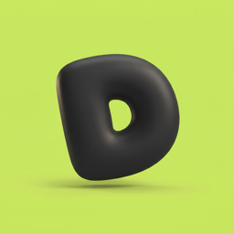

DüzenGizlilik Politikası
Son güncelleme: 25 Kasım 2026
Düzen'i geliştiren: Sude Nurfer Dişçi · İletişim: sudenurfer@gmail.com
Kısaca: Düzen'de hesap yok ve giriş yapılmıyor. Girdiğin her şey
(görevler, tarifler, yemek planı, ev işleri, spor, su, kilo, notlar) yalnızca
telefonunda saklanır. Hiçbir sunucuya gönderilmez, bize ulaşmaz, kimseyle
paylaşılmaz. Reklam ve takip yok.
Hangi veriler, nerede?
- Senin girdiklerin: Telefondaki uygulama veritabanında durur. Uygulamayı silince bunlar da silinir.
- Adım sayısı: İzin verirsen Apple Sağlık'tan (iPhone) ya da Health Connect'ten (Android) okunur. Düzen sağlık verisi yazmaz. Okunan günlük toplamlar grafiklerin çalışması için telefonda saklanır. İzni istediğin zaman telefonunun ayarlarından kaldırabilirsin.
- Bildirimler: Hatırlatmalar telefonun kendi bildirim sistemiyle, telefonda kurulur.
- Ana ekran widget'ı: Bugünün görev listesi, widget'ın gösterebilmesi için telefonda uygulamayla widget'ın ortak kullandığı alana yazılır.
İnternet bağlantısı
Düzen yalnızca sen bir tarif linki yapıştırdığında internete bağlanır: o linkteki sayfayı (ya da YouTube ve TikTok'un herkese açık başlık servisini) okuyarak tarifi getirir. Bu sırada sitenin kendisi, her ziyarette olduğu gibi telefonunun IP adresini görebilir. Düzen bu isteğe senin hakkında hiçbir bilgi eklemez.
Çocuklar
Düzen çocuklara yönelik değildir ve kimseden kişisel veri toplamaz.
Verilerini silmek
Tüm veriler telefonda olduğu için uygulamayı silmek hepsini siler. Bizde saklanan bir veri yoktur.
Değişiklikler
Bu politika değişirse güncel hali bu sayfada yayımlanır ve yukarıdaki tarih değişir.
İletişim
Soruların için: sudenurfer@gmail.com